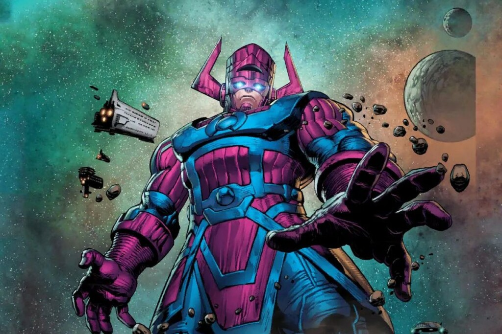

Galactus, também conhecido como Devorador de Mundos, é um personagem de histórias em quadrinhos, uma entidade cósmica dentro do universo Marvel da Marvel Comics. Criado por Stan Lee e Jack Kirby, ele estreou em Quarteto Fantástico nº48, o inicio de um arco de história algumas vezes considerado como a melhor colaboração entre Lee e Kirby. Quando Galactus ameaçou destruir a Terra, o Quarteto Fantástico (auxiliado pelo Vigia Uatu e pelo arauto rebelde de Galactus, o Surfista Prateado) o derrotou ameaçando-o com o Nulificador Total. Galactus jurou nunca mais tentar atacar a Terra. Apresentado inicialmente como vilão, mais tarde teve sua função no Universo esclarecida em um julgamento onde várias raças tentavam decidir o destino de Reed Richards - que estava sendo julgado por ter salvo a vida de Galactus e, portanto, ser co-responsável pelas vidas que o Devorador de Mundos tirou depois disto, como no ato de consumir o mundo-sede do império skrull, por exemplo. Através de um depoimento de Odin - só aceito plenamente após a intervenção da entidade cósmica Eternidade - foi a público que sua função é a de encontrar um planeta seguro, que fosse capaz de sobreviver a próxima entropia do universo, uma vez que o próprio Galactus seria o único sobrevivente de uma entropia anterior.[2] Apesar de ser conhecido como Devorador de Mundos, Galactus não conseguiu se alimentar do planeta mãe dos Espectros. A corrupção da raça dos Espectros era tamanha que foi capaz de contaminar o planeta em que viviam, tornando-o inadequado.
